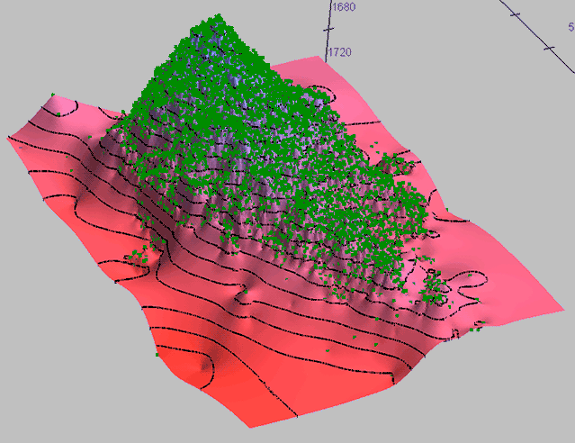

surfit/examples/test/task.txt) and equidistant grid with more than 1000000 nodes! To produce interpolation evenly sampled surface we do the following things: Here is image of resulting surface:

Pic 1. interpolation surface
Pic 2. small part of interpolation surface
This result was obtained with "surfit/examples/test/map_task.tcl" script.
Some comments to script:
# load libsurfit[info sharedlibextension] # resulting surface must have name "map_task" set map_name map_task # reading scattered data points from 3-column text file task_read task.txt task # constructing surfit_grid grid_get_for_task 1024 1024 set tol 2e-6 # setting surface behaviour between scattered data points completer_set 1 2 ## settings for very fast calculation (and unprepossessing result) #set tol 4e-6 #completer_set 1 0 # running CMOFS algorithm solve # unloading surfit_grid from memory grid_unload # saving results to binary ROFF file file_save map_task.dat putlog "calculating residuals..." func_resid task_residuals.txt task_read task_residuals.txt residuals 4 1 2 4 set task_mean [task_mean] putlog "residuals mean value is $task_mean" putlog "residuals standard deviation is [task_std $task_mean]" putlog "func_D1 is [func_D1]"
surfit-1.0.0pre